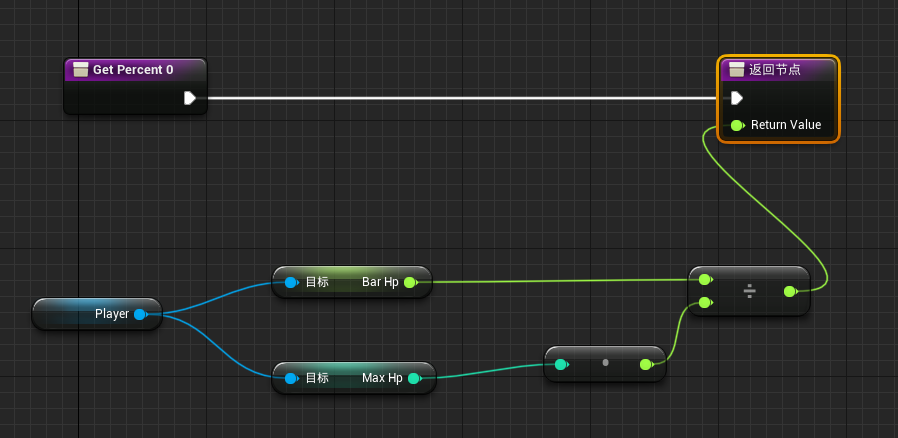
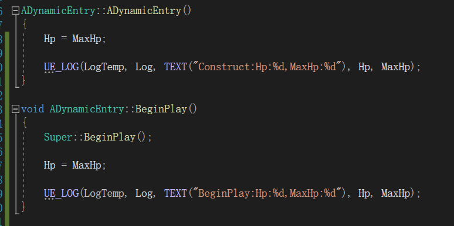

开始尝试用 ue4 做一个小游戏，由于几乎没有游戏引擎的基础，刚上手还是蛮吃力的，当中也遇到了不少比较简单的问题，这个系列就是记录下遇到的问题和解决方式，方便巩固和查找。
# 1.Actor 初始化顺序
在实现一个简单的血条 UI 时，发现 unreal 一些操作的调用顺序是和我一开始想的是有些不一样的。
/*DynamicEntry.h*/ | |
UPROPERTY(EditAnyWhere, Category = "Attr") | |
float Speed; | |
UPROPERTY(EditAnyWhere, BlueprintReadOnly, Category = "Attr") | |
int MaxHp; | |
UPROPERTY(BlueprintReadOnly) | |
int Hp = 0; | |
int BarHp = 0; // 进度条中显示百分比的血量，用于血量变化时进度条缓冲 |
上面声明了游戏对象基类 ADynamicEntry 的移动速度、最大血量和当前血量，Speed 和 MaxHp 设置了 EditAnyWhere ，方便在编辑器中设置：
然后我为了初始化当前血量和显示用血量，于是在构造函数中初始化：
ADynamicEntry::ADynamicEntry() | |
{ | |
Hp = MaxHp; | |
BarHp = MaxHp; | |
} |
最后将血条进度绑定函数设置为 BarHp/MaxHp:

结果发现，血条一直显示为 0：
于是添加打印:

打印结果显示，构造函数中 MaxHp 还是 0，而 BeginPlay() 中已经变为了 555：
所以得出结论：蓝图编辑器中设定的值在构造函数后执行。我一开始蓝图编辑器中赋值的过程类似初始化表，不过现在看来这一过程是类似构造函数后执行的 init 函数。
从官方文档找了 Actor 的生命周期，方便今后查阅：

# 2.BlueprintImplementableEvent
为了实现血条变化时的缓冲效果，需要用到 ue 提供的 TimeLineComponent，实现起来会比较方便。但我查阅了 TimeLineComponent 的 C++ 文档，感觉用 C++ 去使用挺麻烦的，所以我使用了 BlueprintImplementableEvent ：
// 血条 UI 缓冲更新 | |
UFUNCTION(BlueprintImplementableEvent) | |
void HpBarUpdate(); |
使用这个关键词之后，我在 BP_DynamicEntry 这个蓝图类中提供对应函数的实现：
我代码中有两个 C++ 类，DynamicEntry 和 MyPlayer，其中 MyPlayer 继承于 MyPlayer，同时有 BP_DynamicEntry 和 BP_MyPlayer，分别继承自 DynamicEntry 和 MyPlayer。
我一开始以为， BlueprintImplementableEvent 的实现就是最终编译链接的时候链接到蓝图中对应函数实现翻译成的代码。因此我认为在 BP_DynamicEntry 中实现 HpBarUpdate 后，BP_MyPlayer 相当于可以直接调用父类的 HpBarUpdate。不过现在写出来以后就能发现这个想法的不合理，BluePrint 类本身就是 “继承” 自 C++ 类，这两个本身就是子类父类的关系，怎么可能蓝图类里可以直接完成父类的方法的实现呢。
所以按我刚才的方法，仅在 BP_DynamicEntry 这个类中去提供 HpBarUpdate 的话，BP_MyPlayer 中是无效的，需要封装一个函数让两边都调用，或是分别实现一下。
因此 BlueprintImplementableEvent 的实现应该说类似在 C++ 类中将一个函数改为虚函数，默认提供空实现，然后蓝图类中实现就相当于重载父类的虚函数。
# 3. 总结
本次使用了解的要点：
EditAnywhere的变量的赋值在构造函数之后，因此使用最好在BeginPlay()后。BlueprintImplementableEvent本质是类似虚函数的重载，而不是直接将蓝图中的实现进行链接。
最后，这阵的使用下来，感觉 Unreal 相比 unity 感觉学习成本还是相对高一点，不过感觉习惯了蓝图这一套系统以后，将代码都一定程度地可视化了，对没什么编码和游戏引擎基础的人来说应该是相当友好的。
（P.S. 由于我游戏引擎方面确实没啥基础，所以记录的问题比较简单，也不会像之前写博客一样尽力求个原理，毕竟主业还是服务器～）
# 参考文档
- Actor 生命周期